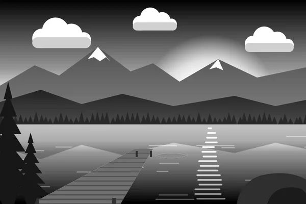

Editing isn’t cheating. Every digital photo gets processed, either by the camera’s own software or by you. Doing it yourself, from a raw file, gives you the most control. The order of steps below works in nearly every editing program, and following it saves you from undoing earlier work.
Raw or JPEG
A JPEG is a finished picture. The camera has already set its white balance, contrast, sharpening and colour, and thrown away the data it didn’t need. A raw file keeps everything the sensor recorded. That gives you far more room to rescue highlights or change the white balance without losing quality. Raw files are bigger and always need processing, which is why many photographers record both.
A good order of work
- Crop and straighten. Fix the horizon and the framing first, because every later step depends on what’s left in the picture.
- Set the white balance. Click a neutral spot with the picker, or move temperature and tint until whites look white.
- Set the exposure. Adjust the overall brightness while you watch the histogram.
- Shape the tones. Bring back detail with the highlights and shadows sliders, then set the end points with whites and blacks.
- Add contrast and colour. Small amounts go a long way. Push saturation too far and skin starts to look orange.
- Make local adjustments. Brighten a face or darken a bright corner with a brush or a mask.
- Remove distractions. Clone away dust spots and small bright things near the edges.
- Sharpen and reduce noise. Do this last, and judge it at 100% on screen.
Masks and local adjustments
Global sliders change the whole picture. Masks let you change just one part of it. Most programs can now select the sky or a person automatically, and you can paint masks by hand with a brush. A typical use is darkening a bright sky a little while brightening the foreground, which does what a graduated filter does in the field. Keep local changes subtle. If people notice the edit before the picture, it’s too strong.
Black and white


Converting to black and white is more than removing colour. Each colour turns into a shade of grey, and a good conversion lets you decide how bright each one becomes. Darkening blue makes skies dramatic, as a red filter did in the film days. Brightening orange and red lightens skin. Pictures with strong shapes and contrast tend to work best without colour.
Exporting for screen and print
For sharing online, export a JPEG in the sRGB colour space. Around 2,000 to 2,500 pixels on the long side is plenty for most screens and keeps files small. If a website or a competition asks for a particular size, use that.
For print, the usual guide is 300 pixels per inch at the final size. A 20 × 30 cm print needs about 2,400 × 3,500 pixels. Most labs accept sRGB JPEGs. Screens are much brighter than paper, so prints often come out darker than you expect. Brightening the print version a little, or calibrating your screen, helps a lot.
Keeping your photos safe
Every hard drive fails one day. The usual advice is the 3-2-1 rule, three copies of every photo on two different kinds of storage, with one copy somewhere else, like a cloud service or a drive at a friend’s house. Back up after every shoot, before you format the memory card.
Exercises
Exercises P1–P4. Tick each one off when you’ve tried it. Your ticks stay on this phone or computer.
- P1
One picture, every step
Take one raw file through every step in the order from chapter 18. Save a version after each step and compare the first with the last.
- P2
Black and white
Convert a colour landscape to black and white. Adjust the blue and orange channels until the sky and the land separate well.
- P3
Local adjustment
Darken a bright sky with a mask while brightening the foreground. Keep it subtle enough that a friend can’t spot the edit.
- P4
Print test
Print one photo small and hold it next to your screen. Adjust the brightness of the print version until the two match.
Photography Handbook, © 2026 Samskara Photo Club. Text and illustrations are licensed under CC BY-NC-SA 4.0. You may share and adapt them for non-commercial use if you credit the club and share your version under the same licence. Commercial use needs the club’s permission. The club logo is not covered by the licence.